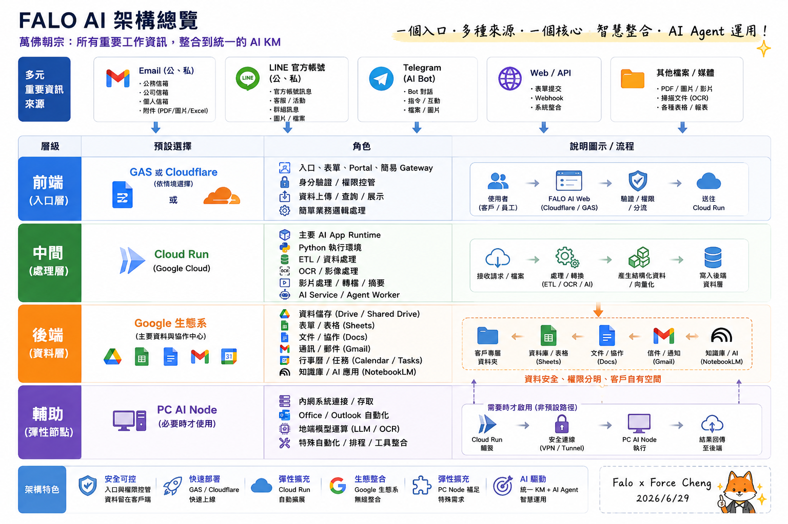
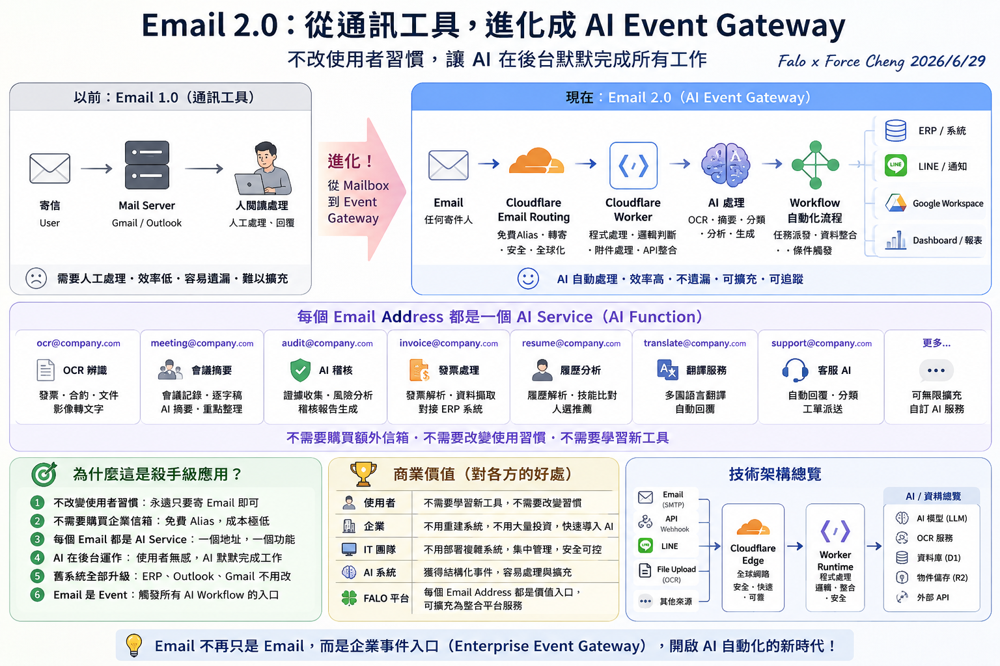
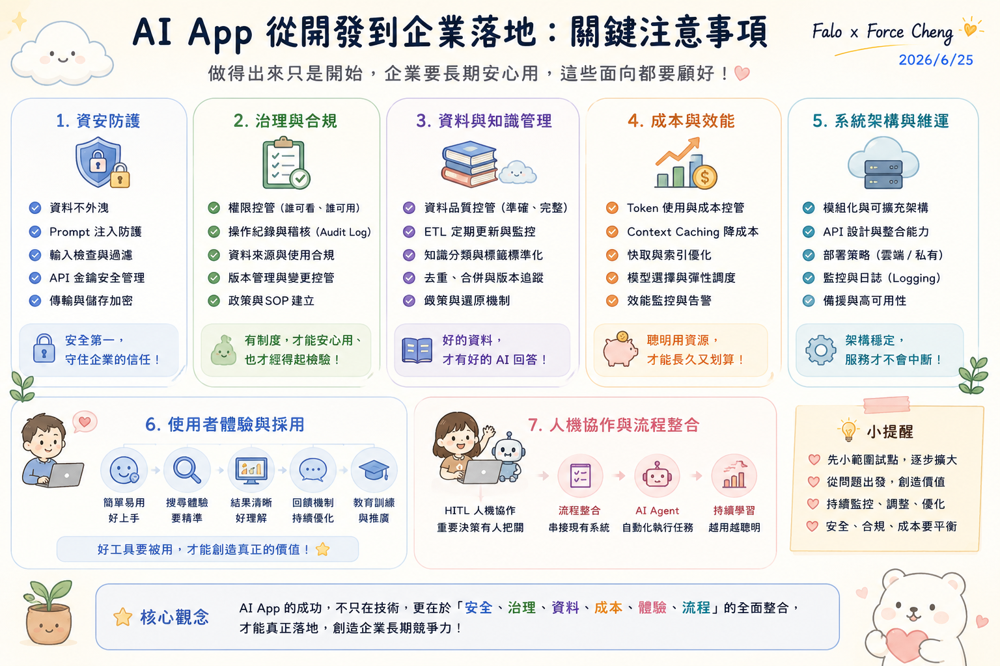

主題二：AI App 專案腦力激盪
本主題收錄完整的「AI APP Studio 工作坊」實戰框架，引導同仁從痛點出發，共創銀河 ERP × FORCE AI App Store 的產品藍圖。本專案將 AI App 創意與需求池物理性地劃分為三大核心業務方向，並以折疊面板形式呈現極具深度與前瞻性的技術細節，供同仁進行腦力激盪與系統設計。
---
🛠️ FALO AI 系統開發核心工具與技術架構
在進行 AI App 的設計與腦力激盪前，同仁應先對我們系統開發所主要聚焦的工具與核心架構有清晰的認識。我們完全基於國際大廠（Google 生態系與 Cloudflare）的企業級基礎設施進行開發，讓 AI 默默在後台默默完成所有工作：


主要聚焦工具與設計精神：
1. 前端與入口層：主要聚焦於 Google Apps Script (GAS) 與 Cloudflare Workers / Email Routing。利用 Cloudflare 作為全球 Edge 節點，結合 Email 2.0 概念（將每個 Email Address 映射為專屬 AI Function，如ocr@、meeting@），在完全不改變使用者習慣的前提下，將郵件收發轉化為啟動後台 AI 工作流的事件入口。
2. 處理層 (Middleware)：主要聚焦於 Google Cloud Run。作為 AI 運行的主要 Runtime，提供 Python 執行環境，負責高密度的 ETL 資料管線、OCR 辨識與影片分析。
3. 資料與後端層：主要聚焦於 Google Workspace (Drive, Sheets, Docs, Gmail, NotebookLM)。使客戶資料完整留存在自有的安全雲端空間中，符合 Zero Trust 企業安全與合規稽核。
---
🎯 銀河 ERP × FORCE AI App Store 三大業務方向產品藍圖
為引導同仁將日常工作的「痛點」轉化為「標準化 AI 產品」，我們規劃了代表未來升級方向的三大核心 AI App 業務方向。以下為各方向的產品定位、架構細節與具體用途：
方向 A：AI KM 政府與企業知識庫平台
解決企業在政策對接、法規檢索與政府補助案申請時面臨的「資訊碎片化」與「合規解讀難度高」等痛點。透過輕量前端檢索與上下文快取，打造低成本的公務知識平台，作為銀河軟體內部研發與產品經理的「產品升級智庫」。
展開檢視方向 A：1. 雙平台 244 款 AI 工具與轉型解決方案標竿檢索器
1. 雙平台 244 款 AI 工具與轉型解決方案標竿檢索器 (AI Tools & Digital Transformation Retriever)
- 核心功能：
- 深度檢索機制：整合「經濟部產發署 AI 工具專區」與「SMEBiz 中小企業數位轉型入口網」共 244 筆台灣本土「AI 工具」、「數位轉型解決方案」、「轉型案例」與「服務商」資料庫，建立高維度的語意向量索引。
- 標竿對齊分析：當產品經理或研發人員輸入特定產業或業務場景（如：製造業排程、零售業客服）時，系統自動比對並推薦市場上最成熟的 AI 工具與轉型方案，分析其核心功能、導入路徑與應用成效，作為自身產品升級的標竿。
- 技術架構與落地方案：
- 輕量化本地檢索：將雙平台共 244 款 AI 工具與方案資料庫以靜態 JSON 形式直接內嵌於前端，並引入輕量化 JavaScript 全文檢索程式庫（MiniSearch）於瀏覽器記憶體內建立索引，提供即時的模糊搜尋與條件過濾，完全無需部署後端向量資料庫（如 Qdrant 或 Milvus）。
- 無伺服器瀏覽器端 RAG：採用 Serverless / Client-side RAG（檢索增強生成）架構。系統採取 「先篩選、後分析」 的優化工作流：在用戶發起 AI 對話時，瀏覽器並不發送全量資料，而是僅將經由檢索與過濾篩選後的精確工具子集作為 Context，搭配用戶本地設定的 Gemini API Key（呼叫
gemini-3.1-flash-lite雲端模型，亦支援地端 Ollama 模型）傳送給大模型。此設計能 極大化降低 Token 消耗量、成倍節省 API 運作成本，並大幅提升回答的精準度與響應效益，達成零後端架構的極致節費落地。 - 應用場景：
- 產品經理在設計 ERP 的「智慧預測」功能時，一鍵查詢產發署 AI 工具專區及 SMEBiz 中，所有已上架的製造業或零售業預測型 AI 解決方案，分析其功能規格與導入模式，精準進行產品定位與升級規劃。
展開檢視方向 A：2. 藍海市場功能缺口與創新商機探測器
2. 藍海市場功能缺口與創新商機探測器 (Blue Ocean Gap & Innovation Detector)
- 核心功能：
- 市場缺口矩陣分析：將 244 款現有 AI 工具與轉型方案的特徵進行多維度矩陣標註，自動分析並找出目前中小企業「尚未被滿足的 AI 轉型痛點」與「技術空白區」。
- 生成式創新提案：基於發現的市場盲點，結合 LLM 自動進行腦力激盪，產出具有獨特競爭壁壘的全新 AI 轉型工具規格書與商業模式設計。
- 技術架構與落地方案：
- 四維複合式檢索定位：利用系統內建的四種搜尋檢索模式（關鍵字檢索、語意條件解析、同義詞關聯、模糊相關度排序），讓產品經理能夠多維度、無死角地檢索與審計 244 款現有工具資料庫。透過分析低匹配度或「零結果」的高頻查詢，精準鎖定市場上的功能缺口與未滿足痛點。
- 生成式 AI 創新提案：針對偵測到的市場空白區，調用內置的 Gemini 智慧轉型顧問（基於
gemini-3.1-flash-lite雲端模型或地端 Ollama 模型），進行多角色腦力激盪與概念組合，為未解決的痛點自動生成產品規格書與 PRD（產品需求文件）草案。 - 應用場景：
- 分析發現雙平台中針對中小企業的「低門檻、免設定 AI 財務分析工具」仍屬空白，系統立即偵測到此轉型缺口，並自動生成「自動化生成式財務報表與對帳模組」的產品開發案，作為銀河 ERP SaaS 智慧增強的獨家研發方向。
- 實作與視覺展示：
- 本探測器所使用的分析與篩選看板，在 主題三：ETL 實務案例分享 中有高保真的實作展示（企業級 AI 雙軌戰情中心）。其中的 「AI 標準化分類佔比圓環圖 (Donut Chart)」、「適用產業熱力矩陣 (Heatmap)」 以及 「預算期程性價比象限散佈圖 (Quadrant Scatter Plot)」 等核心圖表元件，即是此系統用來動態標註特徵、識別產業熱度與劃分高性價比「輕量嘗鮮區/SaaS區」等藍海市場缺口的運維主面板。
---
方向 B：銀河 ERP 企業配套軟體 (SaaS 智慧增強)
- 業務定位：作為 ERP 廠商（銀河軟體），將 AI 技術無縫融入現有 ERP 作業流程中，為企業客戶提供高價值的 SaaS 智慧增值配套，解決複雜數據輸入、合規稽核、生產排程與決策輔助 the 痛點。
展開檢視方向 B：9 大黃金核心模組詳細規格
1. 智慧供應鏈需求預測與採購調配模組 (Demand Forecasting & Purchasing)
- 用途與價值：整合歷史銷售、外部市場趨勢與地緣政治數據，預測未來 3 至 6 個月的物料需求，自動產出最佳採購建議，最大化降低庫存積壓資金。
- 技術實現：結合時間序列模型 (如 PatchTST/TimesNet) 與大語言模型，處理結構化庫存報表與非結構化的市場新聞分析，實現高精度的混合預測。
2. 多模態視覺智慧入庫與庫存盤點模組 (Multimodal Vision Warehousing)
- 用途與價值：倉管人員僅需使用行動裝置拍照或透過廠區監控攝影機，系統即可自動識別入庫物料的種類、數量與外觀缺陷，並自動將數據填入 ERP 庫存系統。
- 技術實現：採用邊緣端 Vision-Language Model (VLM) 進行物料特徵萃取與物件偵測 (Object Detection)，並透過 RESTful API 與 ERP 進銷存模組即時同步。
3. 自動化生成式財務報表與異常對帳模組 (Generative Financial Reconciliation)
- 用途與價值：自動串接多間銀行的對帳單、發票與銷貨單，智慧比對會計科目，自動完成月結與沖帳，並生成符合審計標準的異常對帳分析報告。
- 技術實現：運用 OCR 與多代理人 (Multi-Agent) 架構，一邊由財務代理人解析對帳單，另一邊由合規代理人進行三方對照，校正大模型輸出的噪聲數據。
4. 智慧合約審查與採購履約風控模組 (Smart Contract & Compliance Risk Control)
- 用途與價值：自動審查上下游廠商合約，精準標註出遲延交付、罰則、排他條款等潛在法律風險，並在履約階段自動監控各個里程碑，主動警示潛在違約風險。
- 技術實現：使用專門微調的 Legal-LLM，搭配合約範本的知識庫，進行條款層級 (Clause-level) 的風險評級與合規性分析。
5. 全球跨境貿易合規與自動關稅稅則計算模組 (Cross-border Trade & HS Code Classifier)
- 用途與價值：針對進出口企業，自動根據產品描述判定精準的國際 HS Code，即時試算各國關稅與進口稅費，並預警地緣政治引發的貿易禁令或制裁風險。
- 技術實現：構建動態關稅法規知識庫，利用 RAG 技術檢索世界海關組織 (WCO) 最新規範，結合語意分類器進行稅則編號智慧推薦。
6. 生成式生產排程調整與動態瓶頸診斷模組 (Generative Production Scheduling / APS)
- 用途與價值：在產線遭遇急單插單、機台故障或原料遲延時， AI 自動在數秒內重新計算最佳生產順序，並以視覺化甘特圖呈現，同時主動指出產線的瓶頸工作站。
- 技術實現：結合傳統啟發式演算法 (Heuristics) 與 LLM Agent，由 LLM 理解突發狀況的語意脈絡，調用後端排程求解器 (Solver) 進行多目標優化計算。
7. 主動式客戶全生命週期價值與流失率預測模組 (Customer LTV & Churn Predictive Engine)
- 用途與價值：分析客戶在 ERP 系統中的採購頻率變化、退貨率、應收帳款延遲天數與客服工單，主動預警流失風險，並自動生成量身定制的挽留方案。
- 技術實現：利用機器學習分類演算法進行特徵工程，結合 LLM 自動撰寫客製化的關懷郵件與折扣券提案。
8. HR 智慧履歷萃取與適崗度媒合模組 (Smart HR Resume Matching)
- 用途與價值：一鍵解析多種格式 (PDF/Word/圖片) 的求職履歷，自動萃取工作經歷與專業技能，對齊 ERP 中的職缺需求，進行高精度的適崗度評分，並自動生成面試提問大綱。
- 技術實現：採用 JSON Mode 或 Pydantic 強制 LLM 輸出結構化 Resume Schema，並透過向量智慧相似度計算履歷與 Job Description (JD) 的語意契合度。
9. 智慧節能減碳與 ESG 雙軸轉型申報助理 (Smart Carbon & ESG Reporting Assistant)
- 用途與價值：自動採集 ERP 中與碳排放相關的活動數據（如電費單、範疇一與範疇二的能源消耗、物流碳足跡），自動換算碳當量，並撰寫符合 GRI 與 SASB 國際標準的 ESG 永續報告書草稿。
- 技術實現：建立環保署與國際碳排係數資料庫，透過 AI Agents 進行數據清洗、係數匹配與合規報告文本生成。
展開檢視方向 B：2 大增值選配組件詳細規格
1. FORCE ERP Form Helper (智慧填單助手)
- 用途與價值：運用 Chrome 瀏覽器外掛，將使用者的非結構化對話、通訊軟體訊息或電子郵件內容，自動解析並填入 ERP 系統的複雜表單中，實現「對話即填單」，大幅降低基層員工打字輸入的負擔。
- 技術實現：利用 Chrome Extension 注入腳本，將選取的文字傳送給後端 LLM，利用 Few-shot Prompting 將非結構化文本映射到 ERP 表單的 DOM 欄位上，並進行自動填寫與校對。
2. 離線安全語音 ERP 操作助理 (Local Voice-to-ERP Copilot)
- 用途與價值：專為產線作業員、倉管人員設計。在雙手不便操作電腦的環境下，作業員可直接透過語音命令（如：「將 A 料架的 10 個螺絲移至 B 料架」）控制 ERP 系統，全程在廠區本地執行，保障商業機密。
- 技術實現：在本地部署輕量化的 Whisper 模型進行語音轉文字 (STT)，接著使用微型大語言模型 (如 Qwen-2.5-7B-Instruct) 進行意圖識別與實體萃取，最後轉換為 ERP 系統的 API 呼叫指令。
---
方向 C：個人與公司常用軟體 (日常效率倍增器)
- 業務定位：以 SME（中小企業）通用、低門檻、高回報為原則，以「大項目 ➔ 往下展」的結構，建構一套日常效率倍增器全景圖譜，旨在加速行政事務、會議協作與決策支援，全面釋放組織生產力。
展開檢視方向 C：7 大項目、28 大產品組件全景圖譜
類別一：行政與文宣效率增強 (Administrative & Marketing Efficiency)
1. 文宣海報 AI 生成器：輸入產品特徵與目標受眾，自動生成多規格社群媒體文宣文案、吸睛標題與視覺設計排版草圖。
2. 多國語系企業官網翻譯與 SEO 優化器：自動將官網內容翻譯為多國語言，並根據當地搜尋引擎習慣，自動生成高排名的 Meta 標籤與關鍵字佈局。
3. 生成式電子郵件回信助理：分析客戶來信的語意與情緒，自動草擬專業、委婉或積極等多種語氣的商務回信供人員選擇。
4. 企業公告與通知自動發佈器：一鍵將複雜的政府政策或公司公文精簡為易讀的公告，並自動排程發送至 Slack、Teams 或 Line 官方帳號。
類別二：智慧會議與協作精練 (Smart Meetings & Collaboration)
5. 多語言語意逐字稿萃取器：支援中、英、台語等多語混雜的會議錄音，自動過濾口頭禪與贅字，生成極高精確度的發言人對照逐字稿。
6. Action Item 自動追蹤與看板同步器：從會議逐字稿中自動提煉出決策事項與待辦任務，自動在 Jira/Trello 上建立卡片並指派給對應同仁。
7. 智慧行事曆協調與最佳時段推薦器：自動分析跨部門團隊成員的行事曆忙閒狀態與個人專注時間偏好，自動推薦最不易被打擾的最佳會議時段。
8. 會議亮點短影音/摘要生成器：自動偵測會議中的熱烈討論或關鍵簡報段落，自動剪輯成 1 分鐘的重點精華視訊片段並附帶文字摘要。
類別三：合規與安全防護助理 (Compliance & Security Assistant)
9. 敏感資訊 (PII) 自動遮蔽與去識別化工具：在將文件上傳至公有雲 LLM 或外發給第三方前，自動偵測並遮蔽身分證字號、信用卡號、手機號碼等敏感個資。
10. 本地離線法規與合約合規審查助理：基於本地邊緣端模型，在 100% 物理隔離與隱私安全的前提下，快速審查並標註商業合約中的潛在法務與合規風險。
11. 企業員工安全行為與異常存取監控器：智慧監控與分析異常的檔案下載、系統登入行為，在發生資料外洩或帳號劫持前主動發出預警。
12. 智慧商標與專利查核助手：自動檢索海量商標與專利公開資料庫，評估新產品命名、外觀設計或技術專利的潛在侵權風險。
類別四：財務與報支自動化 (Financial & Expense Automation)
13. 智慧收據與發票 OCR 報支機器人：員工僅需用手機拍攝收據，系統即刻自動辨識消費金額、統一編號、品名與交易日期，並自動填妥報支單。
14. 差旅費用自動合規稽核器：對照企業內部差旅管理辦法，自動審查報銷單中是否存在超支、重複報銷、非工作日消費等異常行為。
15. 零用金動態預警與智慧補足預測器：分析部門歷史零用金支出的速率與週期，預測水位低於安全線的時間點，並自動觸發補款流程。
16. 智慧供應商付款計畫優化器：綜合考量企業自身資金成本、銀行利率與供應商提供的早期付款折扣，自動計算出最優的付款排程。
類別五：客戶服務與自動化銷售 (Customer Service & Automated Sales)
17. 多模態智慧客服 Chatbot：結合 RAG 技術與視覺辨識，不僅能回答文字問題，還能看懂用戶上傳的產品故障照片，給出精準的維修故障排除步驟。
18. 銷售漏斗機會智慧預測與評分器：深度分析銷售日誌、客戶郵件往來與互動頻率，自動為潛在機會進行贏率評分，並推薦下一步最佳行動。
19. 智慧合約續約與到期主動提醒器：自動偵測即將到期的客戶合約，結合客戶滿意度與使用頻率分析，自動草擬客製化的續約方案與邀請信。
20. 社群聆聽與輿情警報系統：即時監控論壇、社群媒體與新聞，當出現針對公司產品或品牌的負面輿情時，即時發送警報並自動生成公關回應草稿。
類別六：技術研發與代碼協作 (R&D and Code Collaboration)
21. 舊系統代碼 (Legacy Code) 智慧重構與註解生成器：自動為老舊的 Legacy Code (如 COBOL, 舊版 SQL) 補上清晰的語意註解，並重構為高效、安全的現代程式語言。
22. 自動化單元測試 (Unit Test) 生成助理：自動分析程式碼的邊界條件與邏輯分支，一鍵生成覆蓋率達 90% 以上的單元測試程式碼，提升軟體品質。
23. 智慧 API 文件生成與 Mock Server 搭建器：根據程式碼結構與註解，自動產出標準的 OpenAPI (Swagger) 文件，並一鍵建立 Mock API 供前端團隊併行開發。
24. 軟體漏洞與安全隱患靜態掃描器：在程式碼 Commit 時，自動進行靜態程式碼分析 (SAST)，檢測 OWASP Top 10 漏洞與硬編碼金鑰，防範安全威脅。
類別七：數據分析與決策支援 (Data Analysis & Decision Support)
25. 對話式資料庫查詢 (Text-to-SQL) 助手：非技術主管只需用口語提問，系統即可自動轉換為精準的 SQL 查詢，並在前端自動繪製成直觀的數據圖表。
26. 智慧 KPI 看板與異常指標警報器：自動監控營運數據，當發現關鍵 KPI 異常偏離歷史區間時，主動進行根本原因分析 (RCA) 並發送警報報告。
27. 市場競品定價策略動態分析器：自動爬取並分析競爭對手官網的價格波動、折扣方案與套裝組合，為公司業務團隊提供動態定價建議。
28. 企業知識庫 (RAG) 精準問答調優助理：自動評估知識庫問答的檢索準確度與回答質量，主動指出並修正資訊衝突、缺失或過期的文檔。
---
🗺️ AI App 落地評估指標：工作坊專案設計的終極指引
在 AI App Studio 工作坊 中，我們不僅要激發同仁的創意，更需要引導大家以「企業級落地」的高度來評估與設計每一個 AI App 專案。當團隊在進行腦力激盪、填寫需求 Backlog 或規劃 MVP 時，必須參考這份完整的 「AI App 企業落地關鍵注意事項」 查檢表：

- 使用者體驗與採用：這是產品成功的起點。一個 AI App 如果沒人使用，就無法創造價值。設計時必須確保「簡單易用好上手」，提供「精準的搜尋與交互體驗」，並在前期就規劃好「教育訓練與推廣計畫」。
- 人機協作與流程整合：企業級 AI App 絕非完全脫離人工的黑盒子。我們必須設計 「HITL (Human-in-the-Loop) 人機協作機制」，讓關鍵決策始終有同仁把關；並逐步完成從「流程整合（串接現有 ERP 系統）」到「AI Agent 自動化執行任務」的演進，使系統越用越聰明。
- 系統架構與穩定維運：在設計 MVP 與 PoC 時，就必須考慮未來的擴充性。應採用「模組化與可擴充架構」，優化「API 設計與整合能力」，並在前期就建立完善的「監控與日誌 (Logging)」策略，以確保系統架構穩定，服務不中斷。
---
🛡️ 企業部署實戰：FORCE 閘道相容性與防火牆檢測工具 (Firewall Test)
在進行 AI App 的專案腦力激盪、MVP（最小可行性產品）與 PoC（概念驗證）規劃時，團隊往往會面臨一個極具殺傷力的現實問題：「這款 AI App 在企業內部高度安全的網絡環境下到底能不能通？」
為了在 PoC 規劃初期就進行評估，避免 AI App 創意在部署階段面臨阻礙，我們將 FORCE Assessment Tool (Firewall Test) 閘道與平台相容性評估工具納入本主題，作為 AI App 專案可行性評估的即戰力武器。
🌐 線上即時檢測工具入口 ➔ https://falo-taiwan.github.io/firewall-test/